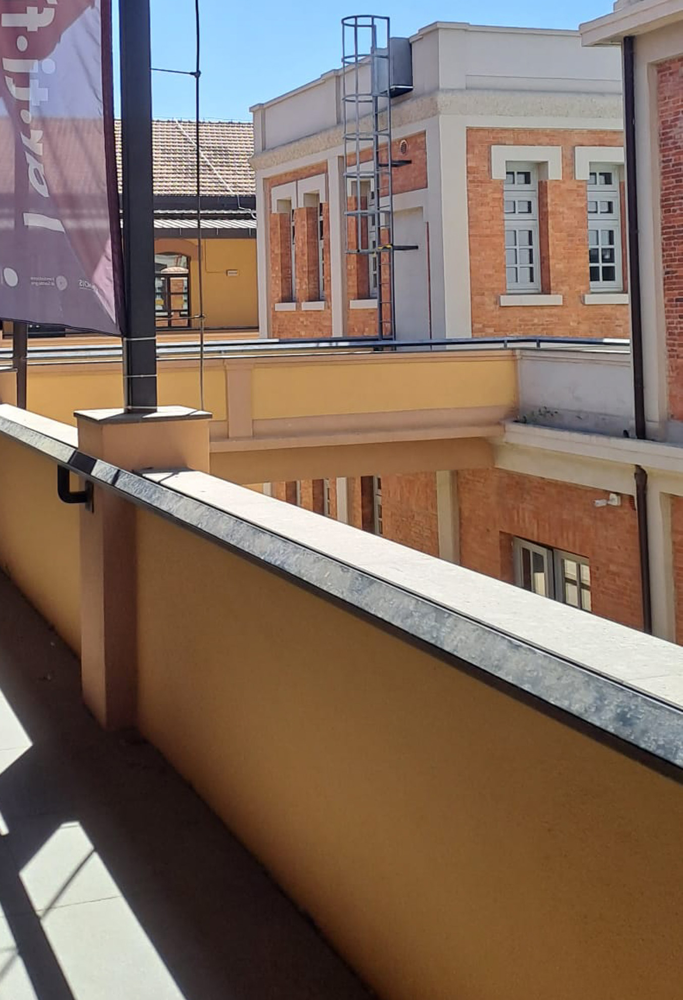

1946/47
Primi interventi di ampliamento. Vengono costruite abitazioni per i dirigenti, laboratori, magazzini.



Primi interventi di ampliamento. Vengono costruite abitazioni per i dirigenti, laboratori, magazzini.
